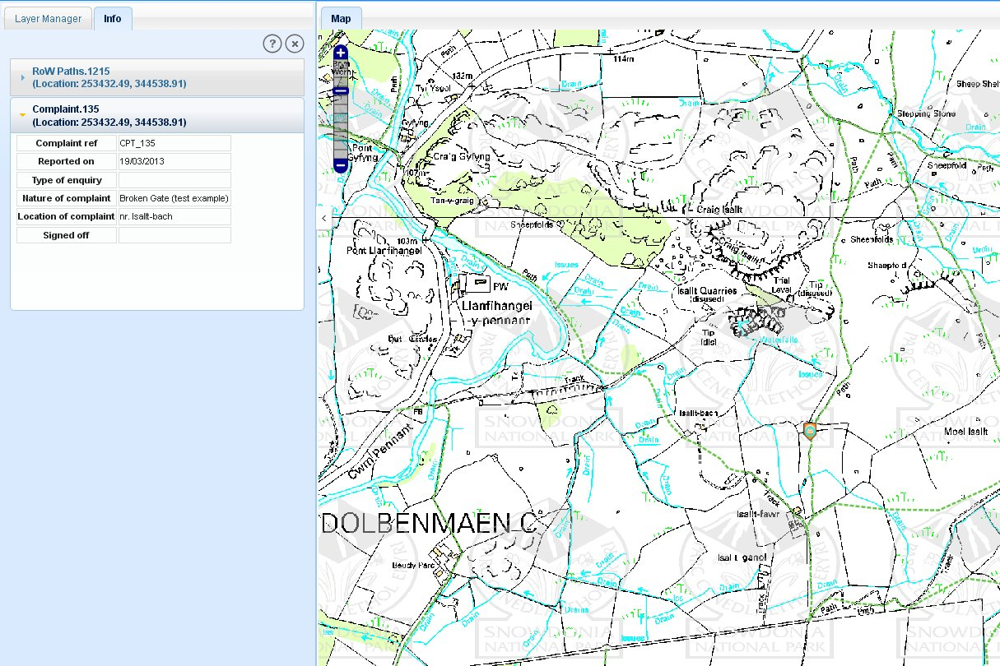

The ‘Info’ tool  is used to view the details of the mapped complaints or paths by clicking on them.
is used to view the details of the mapped complaints or paths by clicking on them.
Locate the area of interest on the map
Click on the Info tool and click on the path or complaint.
In the left panel on the webpage, the details of the feature will be displayed in a new ‘Info’ tab
If multiple features are at that location, the details will be displayed in a collapsed form.
By default the first feature is displayed in an expanded form and is highlighted on the map.
To view information of other features shown in Info tab, click on the features name.
The ‘Info’ tab expands showing its information and it will be highlighted on map as shown in the figure below.

Info tab